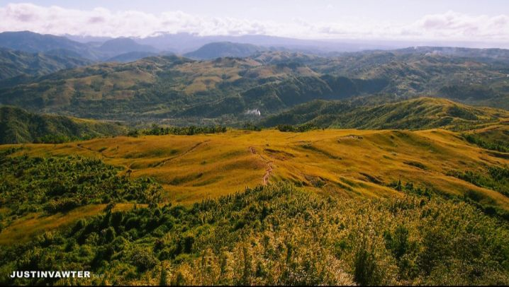

Mt. Batosulong: "A Go-To For Beginners"
Difficulty: 2/5
Jump-Off: Barangay San Andres, Tanay, Rizal
Hours To Summit: 3 Hours
Features: Grassland slopes and marvelous views of the Sierra Madre mountain range.

Why You Should Give It A Try?
Mt. Batosulong is one of the most popular hiking spot in Tanay, Rizal. Located on the south end of the Sierra Madre Mountain range and it is one of the newest mountain destination in Tanay. Mt. Batosulong offers a surreal experience for mountaineers, by it’s fantastic view of the Sierra Madre, and the Sea Of Clouds.
It is near Manila and, it is a perfect trail for beginners.
Transportation: By private car Drive on Katipunan Avenue, then proceed to Marcos Highway. Drive until you reach Barangay San Andres, Tanay, Rizal. Then stop at the barangay hall. Approximately 3-4 hours of travel time.
Guide Fee: Available for 500pesos for 2 Guides
Dayhikable: Yes(3 hours)
How to get there: Ride a bus from Coastal Mall to Nasugbu, Batangas. Then proceed to Evecrest
Few Reminders:
- Mt. Batolusong is a minor climb and it’s good for beginners. Give it a shot
- Bring only necessary things.
- Always observe the Leave No Trace principle. Don’t throw your trash anywhere. Respect nature.
- Wear appropriate Hiking Gear.
- Local guide is required before starting to hike.
More Pictures of Mt. batosulong

Conclusion
Mt. Batosulong is one of the most popular hiking spot in Tanay, Rizal. A lot of fabulous things this mountain can offer to newer mountaineers; such as Grassland slopes and marvelous views of the Sierra Madre mountain range. You may don't want to miss this out when you are just starting to hike.